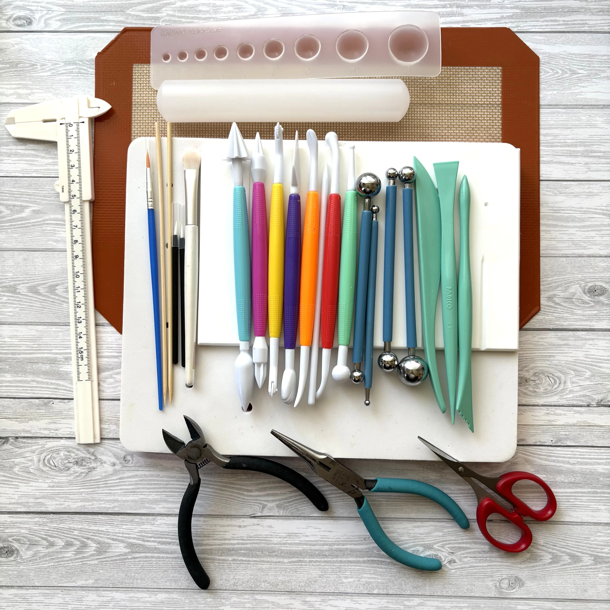

Expanding World
一輪から、
世界は少しずつ広がります
01一輪のお花を作る
02次の花も作ってみたくなる
03ブーケにしてみたくなる
04誰かに贈ってみたくなる
まずは一輪から。
その一輪が、新しい楽しみや自信につながる入口になることがあります。

一輪のライラックから始める、
シュガーフラワー体験講座です。
指先を使って、小さな花びらを整え、
少しずつ形にしていく時間。
それは、自分の心も静かに満たしてくれる時間です。
シュガーフラワーの魅力は、完成した作品の美しさだけではありません。
その一つひとつの時間にも、大きな楽しさがあります。
日々の中では、やることに追われることもありますよね。
でも、目の前の小さな花に集中していると、いつの間にか、日々のざわざわした気持ちから少し離れられることがあります。
指先を使って、美しいものを作る時間。
それは、心を整える時間にもなります。
最初は、少し難しそうに見えるかもしれません。シュガーフラワーは、繊細で、奥深い技術です。
でも、今回の体験講座で大切にしているのは、最初から完璧な作品を作ることではありません。
「私にも作れた」
「もう少しやってみたい」
その小さな自信が、次の楽しみにつながっていきます。
ビギナー本講座での受講生作品とレッスン内容
みなさん、シュガーフラワー初心者です♡
誰に贈ろうかな。
どんな日に添えようかな。
どんな言葉と一緒に渡そうかな。
そんなふうに、誰かの顔を思い浮かべながら手を動かす時間も、心に残ります。
そんな気持ちを、静かに添える花としてもよく似合います。
まずは一輪から。
その一輪が、新しい楽しみや自信につながる入口になることがあります。
平川かなえ
私自身も、長くシュガーフラワーの世界に携わる中で、作品を作る喜びや、挑戦する楽しさに何度も支えられてきました。
うまくいくことばかりではありません。思うように形にならないこともあります。でも、手を動かし続けていると、少しずつできることが増えていきます。
こちらは、2024年のジャパンケーキショーで受賞したシュガーケーキの写真です。すごさを伝えたいというより、一輪から始まる世界が、思っているよりも広いということをお伝えしたくて載せています。
今回の体験講座が、みなさんにとっても、新しい楽しみの入口になれば嬉しいです。
小さな花が集まり、やわらかな表情を作るライラックを、順番に手を動かしながら仕上げていきます。

道具を一つずつ調べて揃えるところから始めなくて大丈夫です。
体験講座に参加したら、そのまま本講座まで進まないといけないのかな。そう感じる方もいらっしゃるかもしれません。
大切にしているのは、ここです。
もっと学びたいと思われた方には、本講座のご案内もします。本講座では、束ねること、流れを整えること、ブーケとして仕上げることまで学んでいきます。
まずは一輪から、気軽に入口に触れていただけたら嬉しいです。
シュガーフラワービギナー体験講座
ライラック制作 ＋ スターターキット付き
手を動かす。
集中する。
少しずつ形になる。
完成した花を見て、「作れた」と感じる。
その時間は、誰かのためでありながら、自分のための時間にもなります。
お会いできるのを楽しみにしています。
スターターキット付き